Soru 1Cevap: C
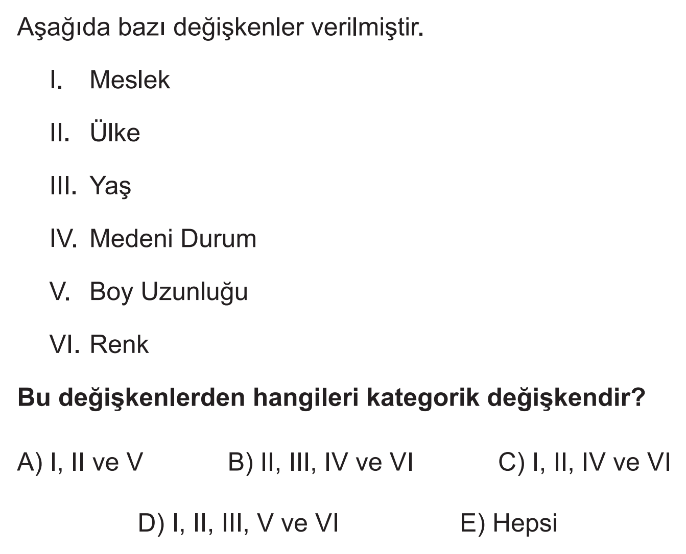
Çözüm
- Kategorik değişken, değerleri sayı değil sınıf/grup olan değişkendir.
- Meslek, ülke, medeni durum ve renk gruplara ayrılır → kategorik.
- Yaş ve boy uzunluğu ölçülerek sayı ile ifade edilir → nicel. Cevap: I, II, IV ve VI.
Cevap: C
Soru 2Cevap: E
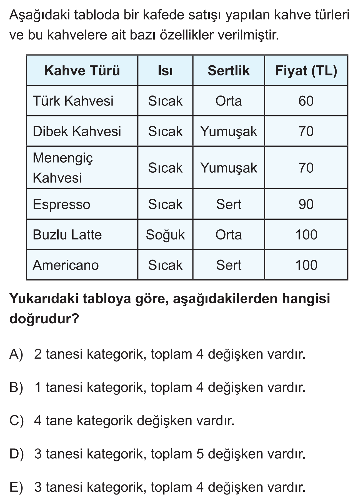
Çözüm
- Tabloda 4 değişken var: kahve türü, ısı, sertlik, fiyat.
- Kahve türü, ısı (sıcak/soğuk) ve sertlik (orta/yumuşak/sert) gruplardır → kategorik.
- Fiyat sayısaldır → nicel. 3 kategorik, toplam 4 değişken.
Cevap: E
Soru 3Cevap: D
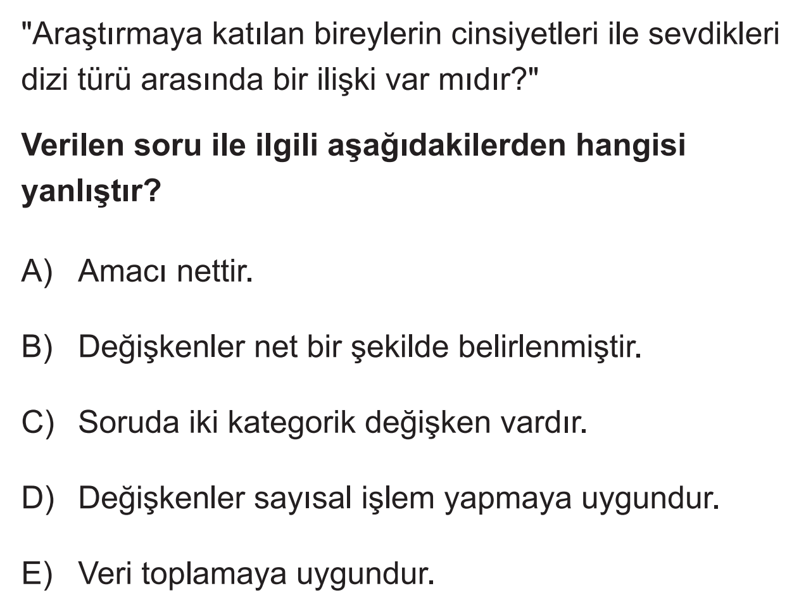
Çözüm
- Soruda iki değişken var: cinsiyet ve sevilen dizi türü.
- İkisi de kategoriktir; amaç ve değişkenler nettir, veri toplanabilir.
- Kategorik değişkenler sayısal işleme (toplama, ortalama) uygun değildir → D yanlıştır.
Cevap: D
Soru 4Cevap: D
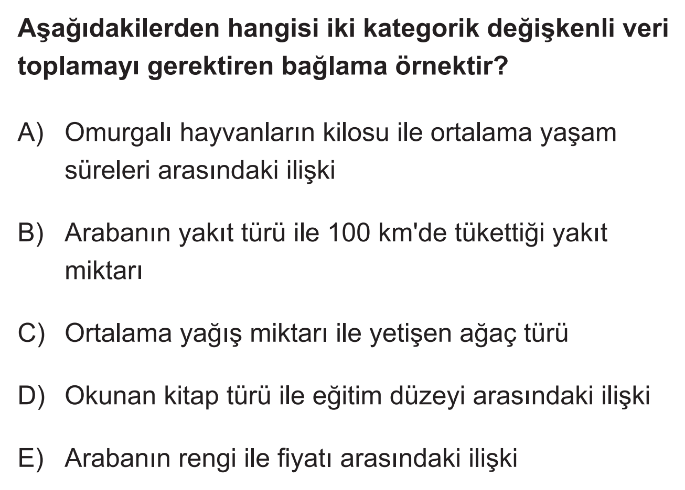
Çözüm
- İki kategorik değişkenli bağlamda iki değişkenin de grup/sınıf olması gerekir.
- A, B, C ve E seçeneklerinde kilo, yaşam süresi, yakıt miktarı, yağış miktarı, fiyat gibi nicel değişkenler var.
- D'de kitap türü ve eğitim düzeyi ikisi de kategorik → D.
Cevap: D
Soru 5Cevap: C
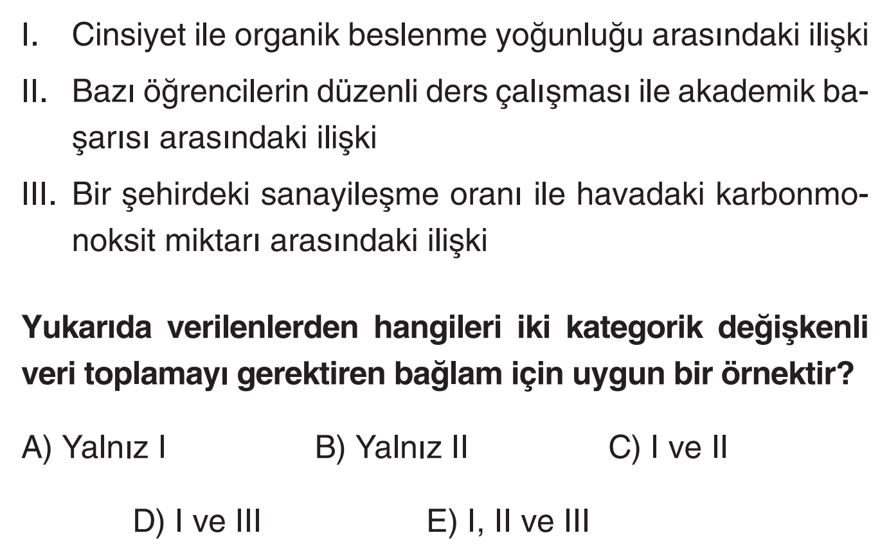
Çözüm
- I: cinsiyet ve beslenme yoğunluğu (az/orta/çok) → iki kategorik.
- II: düzenli çalışma (evet/hayır) ve başarı (başarılı/başarısız) → iki kategorik.
- III: sanayileşme oranı ve karbonmonoksit miktarı sayısaldır. Cevap: I ve II.
Cevap: C
Soru 6Cevap: C
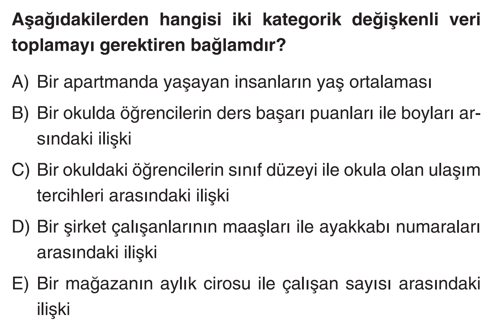
Çözüm
- Her seçenekteki iki değişkenin türüne bakılır.
- Yaş ortalaması, puan, boy, maaş, ayakkabı numarası, ciro, çalışan sayısı nicel değişkenlerdir.
- Sınıf düzeyi ve ulaşım tercihi ikisi de kategorik → C.
Cevap: C
Soru 7Cevap: E
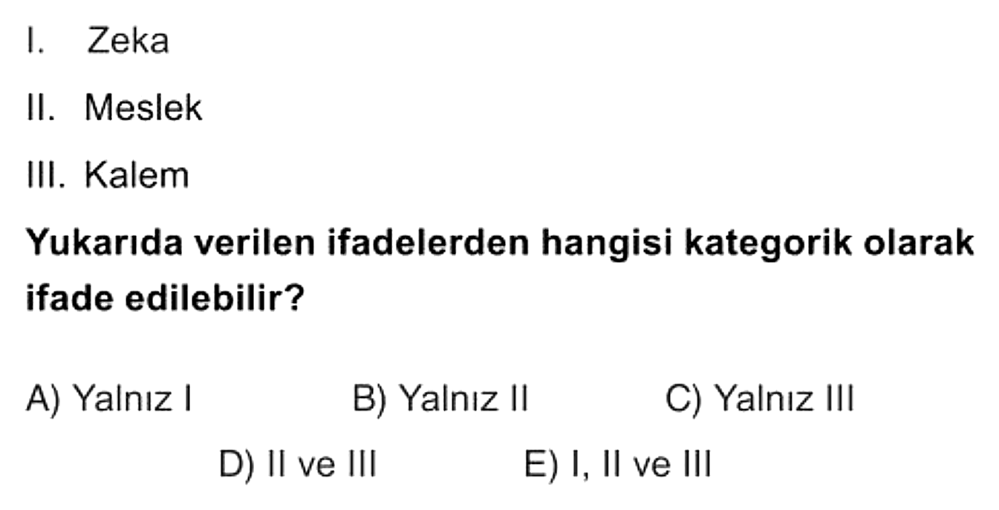
Çözüm
- Zekâ düşük/orta/yüksek gibi düzeylere ayrılabilir.
- Meslek (öğretmen, doktor…) ve kalem (kurşun, tükenmez…) türlere ayrılır.
- Üçü de kategorik olarak ifade edilebilir → I, II ve III.
Cevap: E
Soru 8Cevap: C
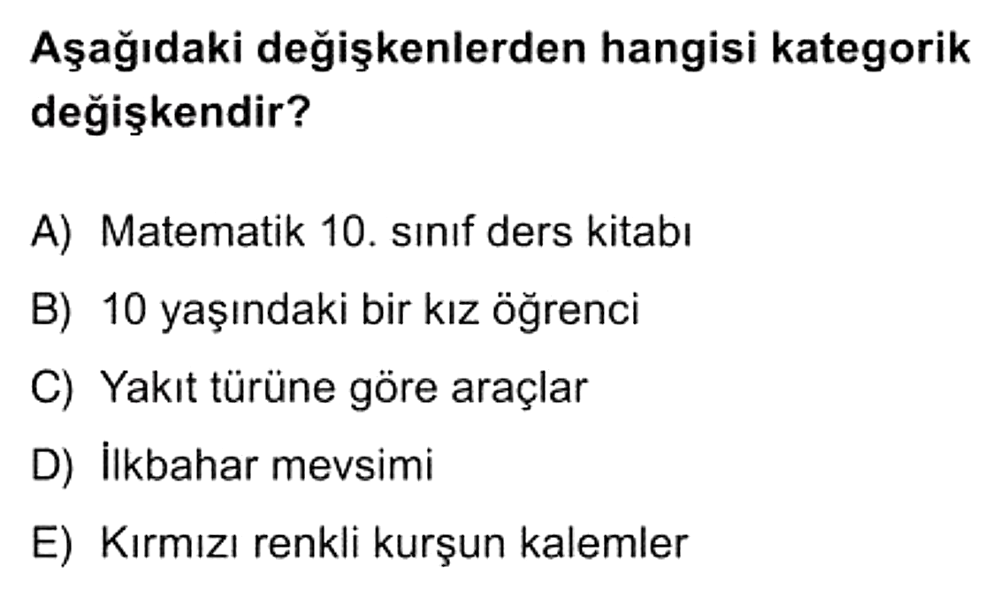
Çözüm
- Kategorik değişken bir grup adı değil, gözlemleri gruplara ayıran özelliktir.
- "10 yaşındaki kız öğrenci", "ilkbahar mevsimi", "kırmızı kalem" tek bir değer/nesnedir.
- "Yakıt türüne göre araçlar" araçları benzin/dizel/elektrik gibi gruplara ayırır → C.
Cevap: C
Soru 9Cevap: E
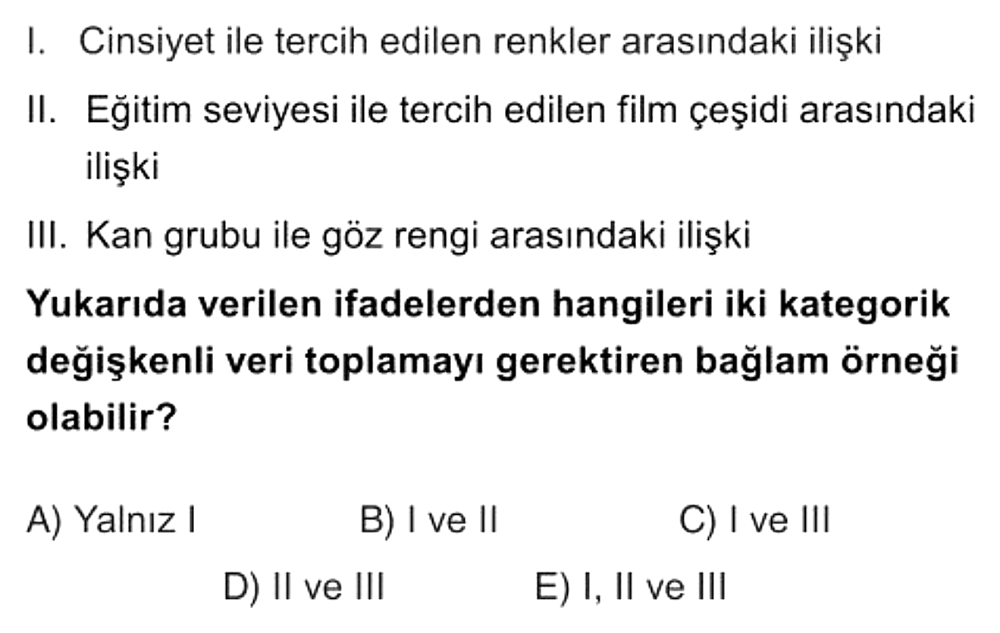
Çözüm
- I: cinsiyet ve renk tercihi kategorik.
- II: eğitim seviyesi ve film çeşidi kategorik.
- III: kan grubu ve göz rengi kategorik. Üçü de uygun → E.
Cevap: E
Soru 10Cevap: D
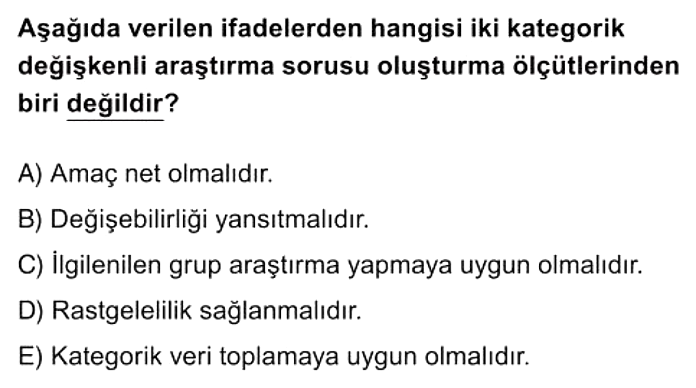
Çözüm
- Araştırma sorusu ölçütleri: amaç net, araştırmaya değer, evren açık, değişken açık, veri toplanabilir, değişebilirlik, grup uygun, kategorik veri.
- Rastgelelik, veri toplama planının bir aşamasıdır.
- Araştırma sorusu ölçütü olmayan → D.
Cevap: D
Soru 11Cevap: C
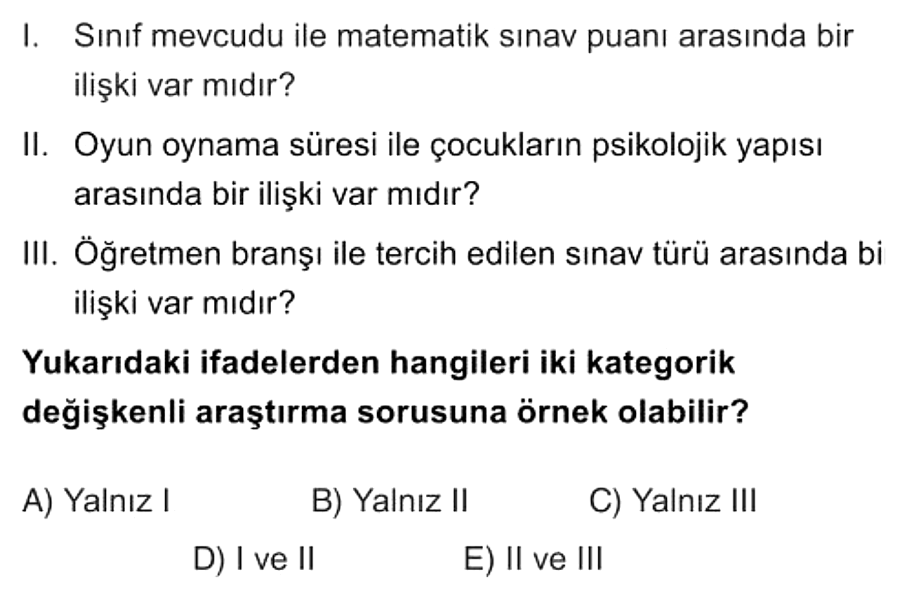
Çözüm
- I: sınıf mevcudu ve sınav puanı sayısaldır.
- II: oyun oynama süresi sayısaldır.
- III: öğretmen branşı ve sınav türü ikisi de kategorik → Yalnız III.
Cevap: C
Soru 12Cevap: C
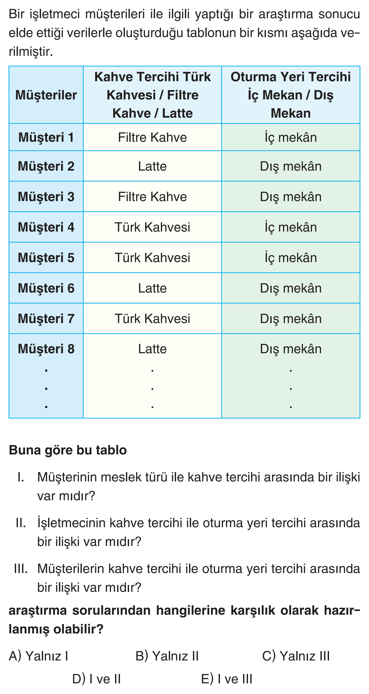
Çözüm
- Tabloda iki değişken var: müşterinin kahve tercihi ve oturma yeri tercihi.
- Meslek türü tabloda yok (I olmaz); tercihler işletmecinin değil müşterilerin (II olmaz).
- Uygun soru: müşterilerin kahve tercihi ile oturma yeri tercihi → Yalnız III.
Cevap: C
Soru 13Cevap: C
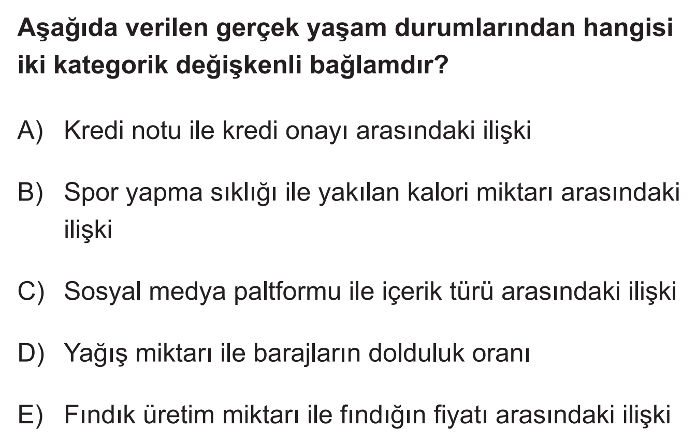
Çözüm
- İki değişkenin de kategorik olması gerekir.
- Kredi notu, kalori, yağış, doluluk oranı, üretim miktarı, fiyat nicel değişkenlerdir.
- Sosyal medya platformu ve içerik türü ikisi de kategorik → C.
Cevap: C
Soru 14Cevap: E
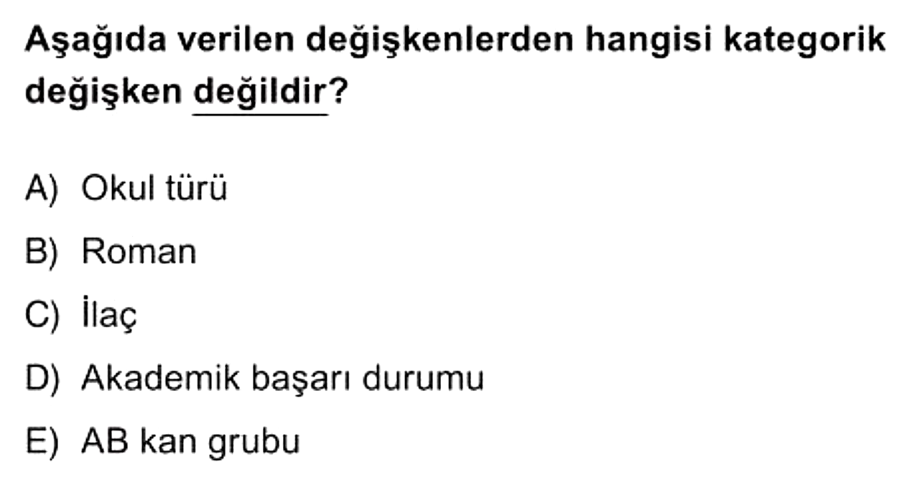
Çözüm
- Okul türü, roman (türü), ilaç (çeşidi), akademik başarı durumu birer değişkendir.
- "AB kan grubu" kan grubu değişkeninin yalnızca bir değeridir (kategorisidir).
- Değişken olmayan → AB kan grubu (E).
Cevap: E
Soru 15Cevap: D
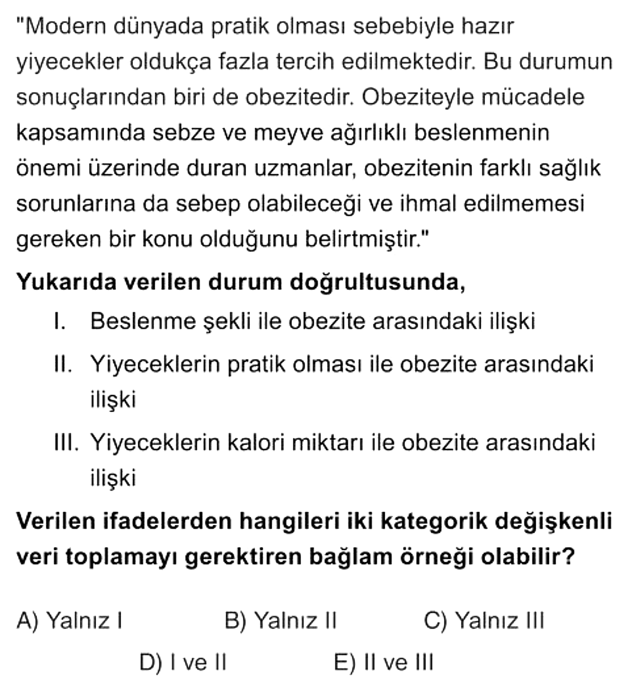
Çözüm
- Beslenme şekli ile obezite (var/yok) → iki kategorik.
- Yiyeceklerin pratik olup olmaması ile obezite → iki kategorik.
- Kalori miktarı sayısal bir ölçümdür → III uygun değil. Cevap: I ve II.
Cevap: D
Soru 16Cevap: A
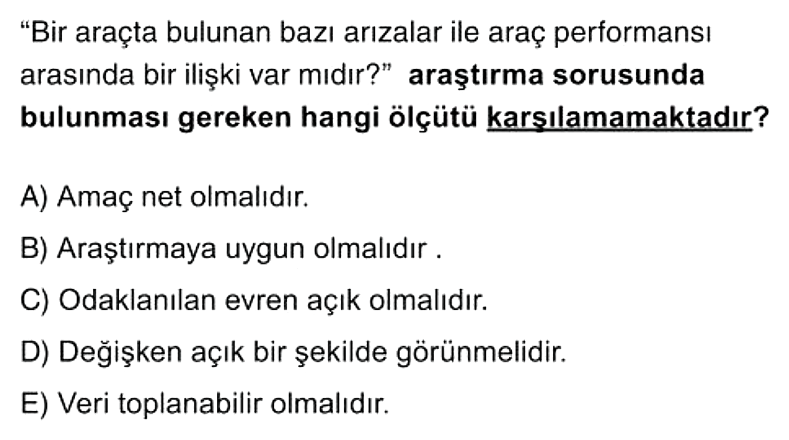
Çözüm
- Soru "bazı arızalar" ifadesini kullanıyor; hangi arızaların incelendiği belirsiz.
- Belirsiz ifade içeren soruda amaç net değildir.
- Karşılanmayan ölçüt: Amaç net olmalıdır (A).
Cevap: A
Soru 17Cevap: A
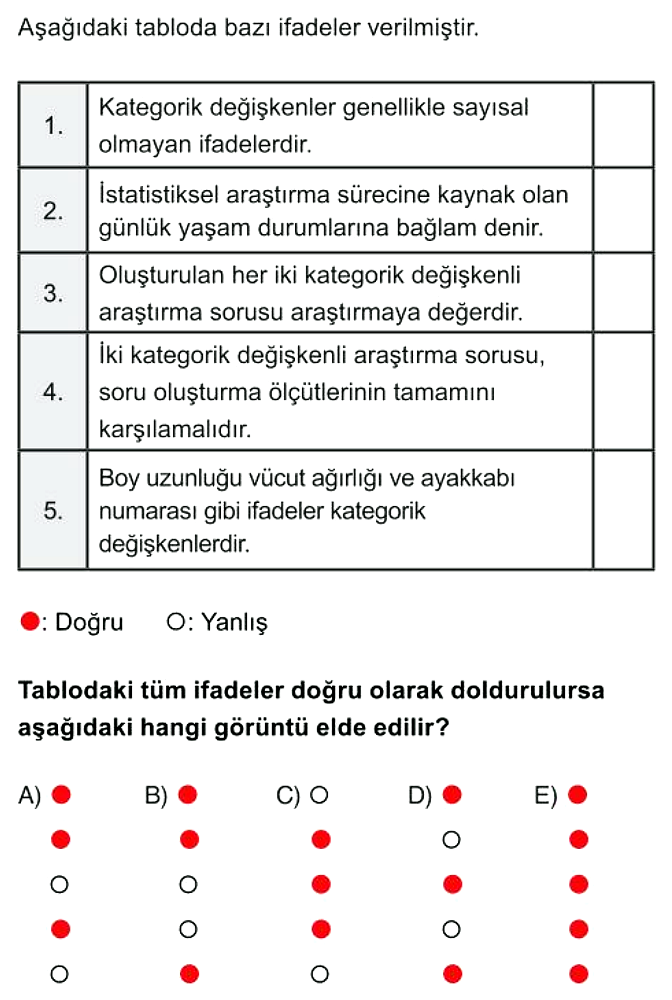
Çözüm
- 1 doğru (kategorik ifadeler sayısal değildir), 2 doğru (bağlamın tanımı).
- 3 yanlış (her soru araştırmaya değer olmayabilir), 4 doğru (soru tüm ölçütleri karşılamalı).
- 5 yanlış (boy, ağırlık, numara nicel). Görünüm: ● ● ○ ● ○ → A.
Cevap: A
Soru 18Cevap: D
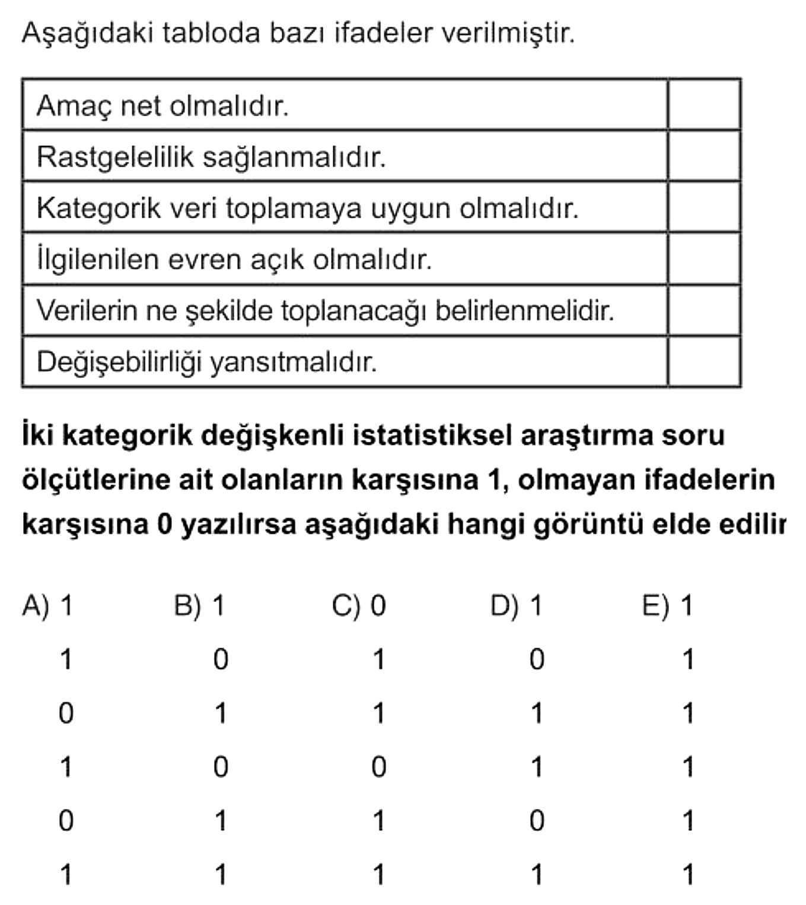
Çözüm
- Araştırma sorusu ölçütleri: amaç net, kategorik veri, evren açık, değişebilirlik → 1.
- Rastgelelik ve verilerin nasıl toplanacağı veri toplama planının aşamalarıdır → 0.
- Sıra: 1, 0, 1, 1, 0, 1 → D.
Cevap: D
Soru 19Cevap: C
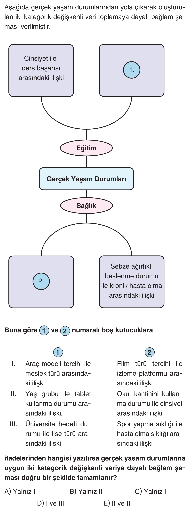
Çözüm
- 1. kutu eğitim, 2. kutu sağlık alanına ait olmalı.
- Üniversite hedefi–lise türü eğitimle; spor sıklığı–hasta olma sıklığı sağlıkla ilgilidir.
- I ve II'deki eşleşmeler alanlarla uyuşmaz → Yalnız III.
Cevap: C
Soru 20Cevap: B
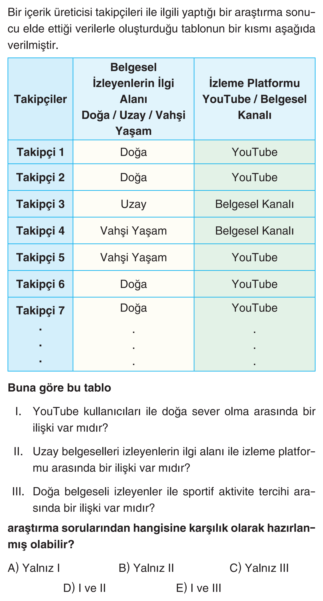
Çözüm
- Tabloda değişkenler: belgesel ilgi alanı ve izleme platformu.
- I ve III'te "doğa sever olma", "sportif aktivite" gibi tabloda olmayan değişkenler var.
- II tablodaki iki değişkeni ilişkilendirir → Yalnız II.
Cevap: B
Soru 21Cevap: A
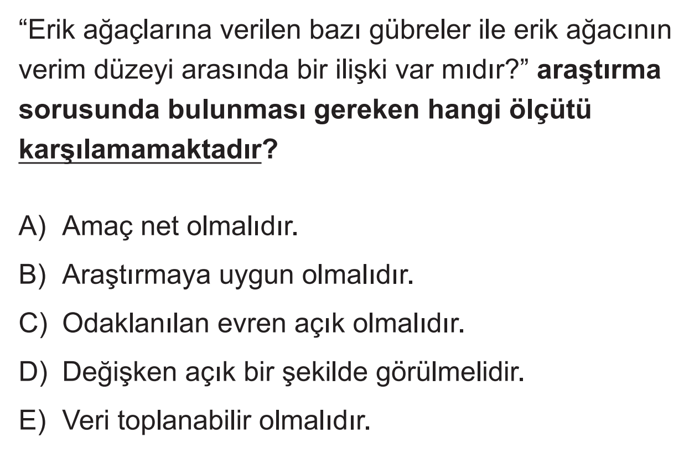
Çözüm
- Soruda "bazı gübreler" ifadesi var; hangi gübrelerin karşılaştırıldığı belli değil.
- Belirsiz ifade amacın net olmamasına yol açar.
- Karşılanmayan ölçüt: Amaç net olmalıdır (A).
Cevap: A
Soru 22Cevap: C
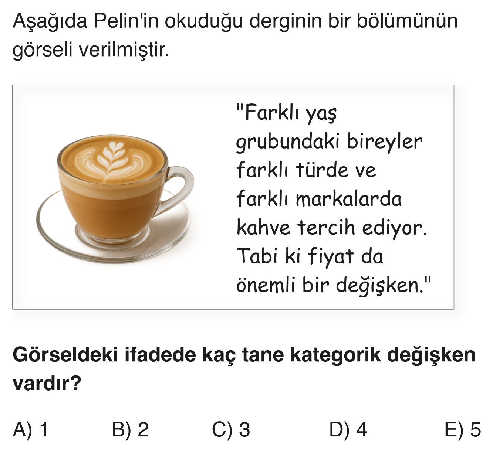
Çözüm
- İfadedeki değişkenler: yaş grubu, kahve türü, kahve markası, fiyat.
- Yaş grubu, tür ve marka gruplara ayrılır → kategorik.
- Fiyat sayısal → nicel. Kategorik değişken sayısı 3.
Cevap: C
Soru 23Cevap: A
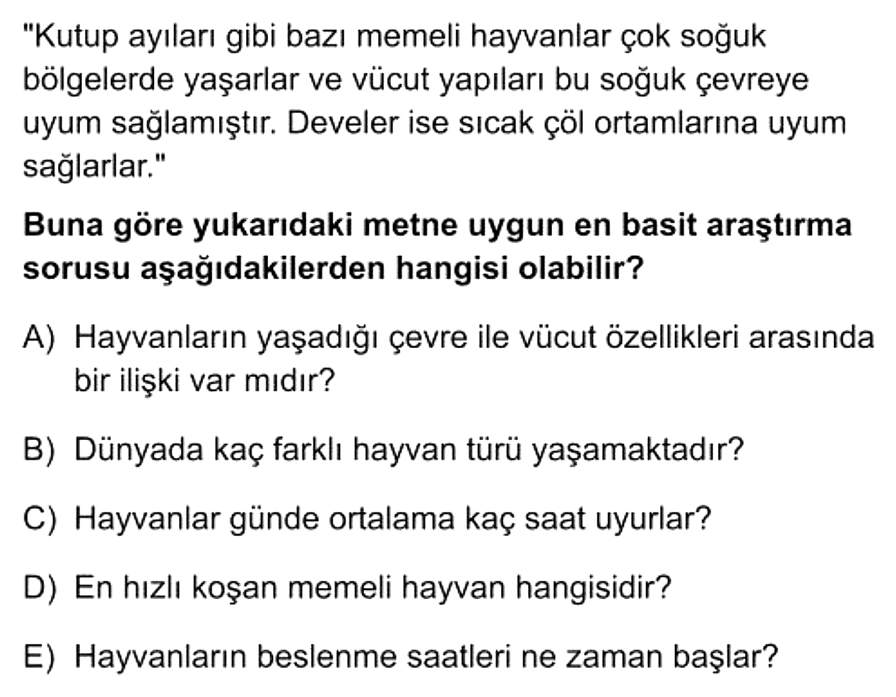
Çözüm
- Metin hayvanların yaşadığı çevre (soğuk/sıcak) ile vücut yapısının uyumunu anlatıyor.
- B–E seçenekleri tek değişkenli ya da metinle ilgisiz sorulardır.
- Çevre ile vücut özellikleri arasındaki ilişkiyi soran A uygundur.
Cevap: A
Soru 24Cevap: A
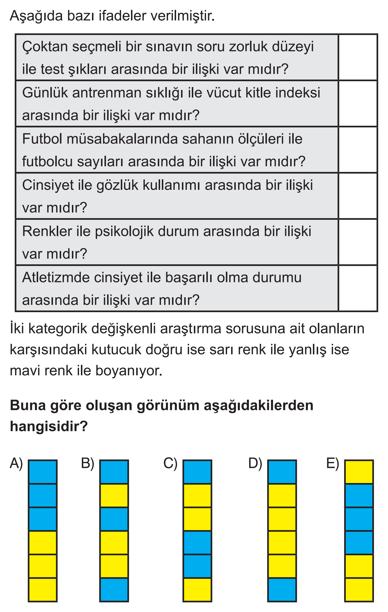
Çözüm
- 1–3. ifadelerde test şıkları, vücut kitle indeksi, ölçüler ve futbolcu sayıları nicel → yanlış (mavi).
- Cinsiyet–gözlük, renkler–psikolojik durum, cinsiyet–başarılı olma ikişer kategorik → doğru (sarı).
- Görünüm: mavi, mavi, mavi, sarı, sarı, sarı → A.
Cevap: A